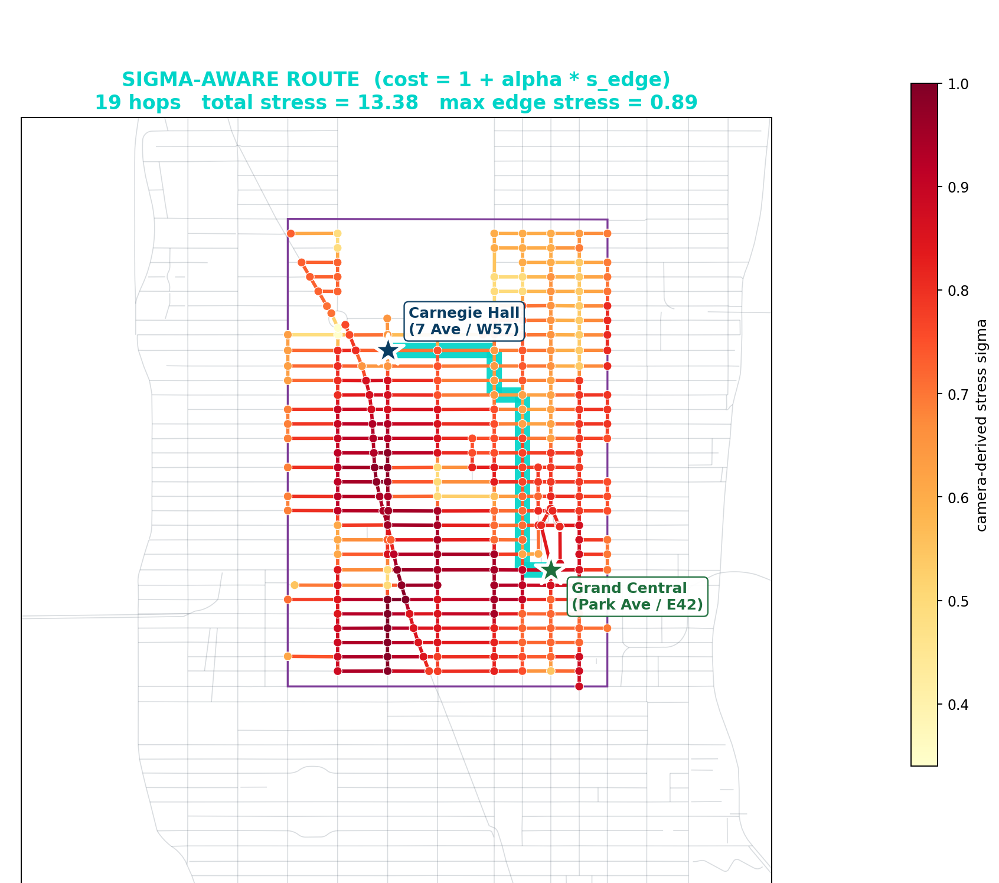

aimezaimez
aimezaimezHow the stress-aware routing system works. It scores every route on measured camera stress, not just distance, and finds a path that reaches the same destination in the same number of blocks with far less accumulated stress.
This public demo runs the Grand Central to Carnegie Hall corridor example. Arbitrary origin and destination pairs run on the pax research backend.

Stress-aware route. 19 hops, total accumulated stress 13.38, max edge stress 0.89. Cost on each edge is 1 plus alpha times the camera stress.
| Metric | Shortest route | Stress-aware route | Change |
|---|---|---|---|
| Hops | 19 | 19 | 0 |
| Total accumulated stress | 17.09 | 13.38 | -3.71 (-21.7%) |
| Mean stress per block | 0.900 | 0.704 | -0.196 |
| Max single-block stress | 0.98 | 0.89 | -0.09 |
| High-stress blocks (s > 0.80) | 17 | 1 | -16 |
| Integral cost (1 + alpha·s) | 36.09 | 32.38 | -3.71 (-10.3%) |
The camera pipeline reads public traffic-camera frames and turns them into a per-block stress value from 0 to 1. The router runs A* search on the Midtown corridor graph with an edge cost of 1 + alpha * stress, so a block that is calmer costs less to cross. The result is a route that holds the same hop count and walks through far less measured stress.
This is the public research demonstration of the mobility substrate. Some broader diagnostic-infrastructure concepts in the research program are the subject of a filed U.S. provisional patent application. Built and orchestrated with Central Casting.